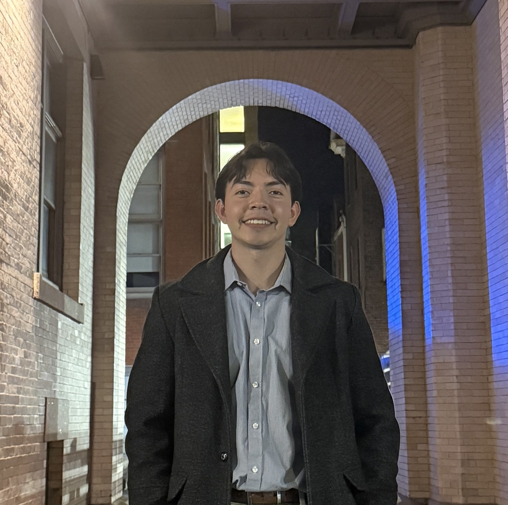

Electrical Engineer · Yale University

I'm an electrical engineering student at Yale University with hands-on experience in embedded systems, PCB design, and signal processing.
I've built PID-controlled hardware, designed analog front-end circuits for Yale's Rocketry club, and worked on FPGA-based systems. I'm driven by a curiosity for how things work at the hardware level and a desire to build solutions that matter.